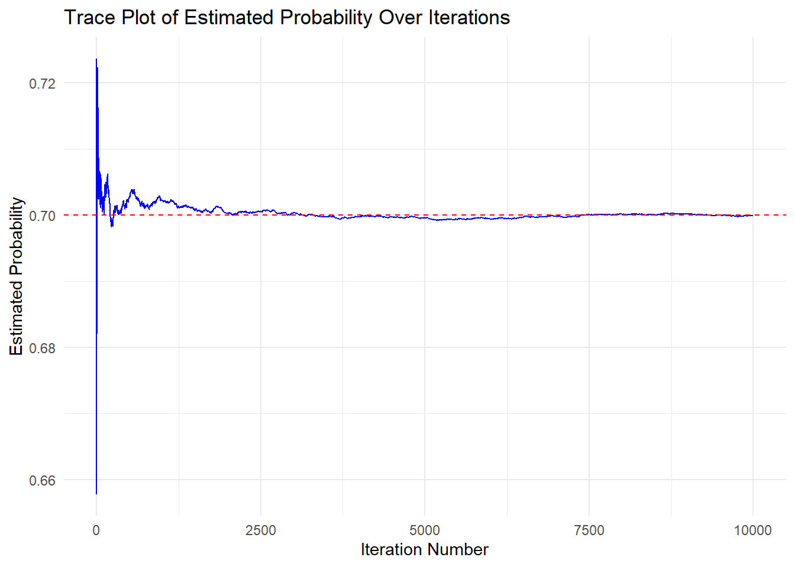

Estimating Causal Effects
This tutorial walks through a hypothetical regression-based Monte Carlo simulation example. Specifically, we simulate many datasets under a known data-generating mechanism where the true treatment effect is 0.7. We then estimate the average treatment effect (ATE) and compare the estimated coefficients from generalized linear models (glm(Y ~ A + L)) with the true treatment effect. Finally, we use the rsimsum package to assess estimator performance based on simulation-based performance measures introduced previously.
We are interested in exploring cholesterol levels, and examining how diabetes medication intake affects them while accounting for the potential confounding effect of age.
| \(Y\) : Outcome | Cholesterol levels (continuous) |
| \(A\) : Exposure | Diabetes Medication |
| \(L\) : Known Confounder | Age (continuous) |
-
Confounder \(L\) (age) is continuous and follows a normal distribution
- \(L \sim N(\mu = 10, \sigma = 1)\)
-
Exposure \(A\) (diabetes medication) is binary (0/1) and follows a logit distribution:
- \(\text{Logit} P(A = 1) \sim 0.4L\)
-
Outcome \(Y\) (cholesterol levels) is continuous and follows a normal distribution:
- \(Y \sim N(\mu = 3L + \theta A, \sigma = 1)\)
Where the true parameter for \(\theta = 0.7\), indicating that, while adjusting for age, the true difference in cholesterol levels between individuals taking diabetes medication and those who are not is 0.7.
In this example, age is considered a confounder. This is because it likely influences both the exposure (diabetes medication intake), and the outcome (cholesterol levels). The risk for developing Type 2 Diabetes increases with age, which increases the likelihood of taking diabetes medication (“Risk Factors for Type 2 Diabetes - NIDDK” n.d.). Additionally, cholesterol levels tend to increase due to changes in metabolism, increasing the risk for developing high blood cholesterol levels (“Blood Cholesterol - Causes and Risk Factors NHLBI, NIH” 2024).
The relationship can be illustrated with a DAG using the simcausal package (Sofrygin, van der Laan, and Neugebauer 2017).
theta <- 0.7
#Initialize the DAG object
D <- DAG.empty()
#Adding the "nodes" to the DAG object
D <- D +
node("L", distr = "rnorm", mean = 10, sd = 1) +
node("A", distr = "rbern", prob = plogis(0.4*L)) +
node("Y", distr = "rnorm", mean = 3 * L + theta * A, sd = 1)
#Creating the DAG with the designated nodes
Dset <- set.DAG(D)
#Plot the DAG
plotDAG(Dset, xjitter = 0.1, yjitter = 0.9,
edge_attrs = list(width = 0.5, arrow.width = 0.4, arrow.size = 1.5),
vertex_attrs = list(size = 10, label.cex = 1.8))Dataset Generation
Based on the above structural causal model, we simulate a hypothetical dataset where each observation represents an individual with a given age (\(L\)), diabetes medication status (\(A\)), and cholesterol level (\(Y\)). We generate counterfactual cholesterol levels under both treatment (\(A=1\), denoted as \(Y_1\)) and no treatment (\(A=0\), denoted as \(Y_0\)), enabling us to estimate causal effects. Diabetes medication status is randomly assigned to individuals, and their cholesterol level will be assigned \(Y=Y_1\) if cholesterol is treated, and \(Y=Y_0\) if cholesterol is not treated.
# Creating a function for generating data based on the 3 variables, L, A, and Y.
simulate_data <- function(n = 10, seedx = 123){
require(simcausal)
set.seed(seedx)
D <- DAG.empty()
D <- D +
node("L", distr = "rnorm", mean = 10, sd = 1) +
node("A", distr = "rbern", prob = plogis(0.4*L)) +
node("Y", distr = "rnorm", mean = 3 * L + 0.7 * A, sd = 1)
Dset <- suppressMessages(set.DAG(D))
# Creating the diabetes medication intervention, but not adding more nodes.
# Under A1, A will always be 1 (Assigned the intervention)
# Under A0, A will always be 0 (Not assigned the intervention).
A1 <- node("A", distr = "rbern", prob = 1)
Dset <- Dset + action("A1", nodes = A1)
A0 <- node("A", distr = "rbern", prob = 0)
Dset <- Dset + action("A0", nodes = A0)
# Simulate data based on on the intervention
# (Simulate both L and Y for both interventions
# (If Diabetes Medication is Given (A = 1) or if is not (A = 0)))
Cdat <- suppressMessages(sim(DAG = Dset, actions = c("A1", "A0"), n = n,
rndseed = 123))
# Round and bind the data to one dataframe
generated.data <- round(cbind(Cdat$A1[c("ID", "L", "Y")],Cdat$A0[c("Y")]),2)
names(generated.data) <- c("ID", "L", "Y1", "Y0")
# Order data by Age (L) and ID
generated.data <- generated.data[order(generated.data$L, generated.data$ID),]
# Randomly Assign data either A = 0 or A = 1
generated.data$A <- sample(c(0,1),n, replace = TRUE)
# If A=0, Y0 is assigned, else Y1 is assigned
# Y1 is cholesterol if treated (A=1), Y0 is cholesterol if not treated (A=0)
# and Y is the observed cholesterol based on assigned treatment
generated.data$Y <- ifelse(generated.data$A==0, generated.data$Y0, generated.data$Y1)
# Save and return both the complete (observed) and counterfactual datasets.
#
# The counterfactual dataset contains cholesterol levels
# under both medication statuses.
#
# The observed dataset contains only the cholesterol level
# corresponding to the assigned medication status.
counterfactual.dataset<- generated.data[order(generated.data$ID) , ][c("ID","L","A","Y1","Y0")]
observed.dataset<- generated.data[order(generated.data$ID) , ][c("ID","L","A","Y")]
return(list(counterfactual=counterfactual.dataset,
observed=observed.dataset))
}Using this function, let’s generate 10 random data points.
Let’s also observe the counterfactual dataset, and see how cholesterol levels differ based on medication status.
result.data$counterfactual$TE <- result.data$counterfactual$Y1- result.data$counterfactual$Y0
result.data$counterfactualWhen subtracting the cholesterol levels under the two medication statues, we can see that the difference for each individual is equal to the true effect, \(\theta=0.7\), as defined earlier.
We established that theoretically \(Y\) follows a normal distribution with mean \(\mu = 3L + \theta A\). Observing the data above, we see that the true effect of diabetes medication on cholesterol levels is 0.7, adjusted for age.
We can also observe the distribution of the cholesterol levels for both the treatment and non-treatment groups using a mirrored density plot:
df <- result.data$counterfactual
# Create densities manually so we can flip one of them
density_y0 <- density(df$Y0)
density_y1 <- density(df$Y1)
# Create dataframes for plotting
df_y0 <- data.frame(x = density_y0$x, y = -density_y0$y, Treatment = "Y0 (No Medication)")
df_y1 <- data.frame(x = density_y1$x, y = density_y1$y, Treatment = "Y1 (Medication)")
# Combine
density_df <- rbind(df_y0, df_y1)
# Plot
ggplot(density_df, aes(x = x, y = y, fill = Treatment)) +
geom_area(alpha = 0.6, color = "black") +
geom_hline(yintercept = 0, color = "gray40") +
labs(
title = "Mirrored Cholesterol Densities",
x = "Cholesterol Level",
y = "Density",
fill = "Medication"
) +
theme_minimal() +
scale_y_continuous(labels = abs) +
theme(legend.position = "bottom")The mirrored density plot shows the distribution of cholesterol levels for both the medicated and non-medicated groups. The two distributions are similar in shape, however, the distribution for the non-medicated group is slightly shifted to the left compared to the medicated group. This indicate that cholesterol levels are, on average, slightly higher when medication is given.
Using the simulated data and Monte Carlo simulation, we can estimate the true effect that \(A\), diabetes medication, has on cholesterol levels adjusted for age, based on the theoretical distributions we defined for each variable.
sim <- 10000 # Number of iterations for the simulation
theta <- 0.7 #True parameter value
# Create a dataframe for the regression estimate for A, and its standard error, for each iteration
results <- data.frame(
A = numeric(sim),
se = numeric(sim)
)
param_A <- numeric(sim) # Numeric vector to store cumulative effect estimate
# Simulate 10000 different datasets using the simulate_data() function,
# and storing the regression parameters for A, and their standard errors
for(i in 1:sim){
result_data <- simulate_data(n = 1000)
results[i,] <- summary(glm(Y ~ A + L, family = "gaussian",
data = result_data$observed))$coefficients["A",c("Estimate", "Std. Error")]
param_A[i] <- mean(results[1:i, "A"])
}
trace_data <- data.frame(
Iteration = 1:sim,
ProbabilityEstimate_A = param_A
)
# Create a line plot using ggplot2
ggplot(trace_data, aes(x = Iteration, y = ProbabilityEstimate_A)) +
# Add a blue line to represent probability estimates over iterations
geom_line(color = "blue") +
geom_hline(yintercept = theta, linetype = "dashed", color = "red") +
labs(
title = "Trace Plot of Estimated Probability Over Iterations", # Plot Title
x = "Iteration Number", # x-axis label for the x-axis
y = "Estimated Probability" # y-axis label
) +
theme_minimal() #ggplot2 minimal theme for clean appearance
From the plot, we can see that the Monte Carlo simulation is doing a stable job at estimating the true effect of diabetes medication on cholesterol levels adjusted for age, as the estimate stabilizes.
As we did with the last example, we can observe the performance using the simsum() function from the rsimsum package (Gasparini 2018). Since we constructed a glm model, we also have standard errors for our estimates, meaning we can calculate model SE, relative error, coverage, bias-eliminated coverage, and power, in addition to what we calculated in the previous example. Results will be formatted and printed using the knitr package (Xie 2023).
# Analyze the simulated results using the rsimsum package
sim_analysis <- simsum(
data = results, # Our simulated dataset
estvarname = "A",
true = theta,
se = "se"
)
# Output summary of the analysis
# Format 'est' and 'mcse' columns to regular decimal notation with 5 digits
formatted_summ <- sim_analysis$summ
formatted_summ$est <- format(formatted_summ$est, scientific = FALSE, digits = 5)
formatted_summ$mcse <- format(formatted_summ$mcse, scientific = FALSE, digits = 5)
# Show using kable
kable(formatted_summ, caption = "Simulation Summary (Non-scientific Notation)")| stat | est | mcse |
|---|---|---|
| nsim | 10000.00000000 | NA |
| thetamean | 0.69926419 | NA |
| thetamedian | 0.69913427 | NA |
| se2mean | 0.00406097 | NA |
| se2median | 0.00405986 | NA |
| bias | -0.00073581 | 0.00064185430 |
| rbias | -0.00105115 | 0.00091693472 |
| empse | 0.06418543 | 0.00045388222 |
| mse | 0.00411990 | 0.00005917153 |
| relprec | NA | NA |
| modelse | 0.06372575 | 0.00000080444 |
| relerror | -0.71617046 | 0.70207891472 |
| cover | 0.94320000 | 0.00231460061 |
| becover | 0.94300000 | 0.00231842619 |
| power | 1.00000000 | 0.00000000000 |
First, the bias is very small, indicating that the estimate just slightly underestimates the true effect, though this bias is very small. the relative bias confirms that an unbiased estimate is generated from the Monte Carlo simulations. The empirical standard error and model standard error show that the estimates vary little across simulation repetitions, and that the standard errors produced within each simulation are also small. The relative percentage error in the model standard error is very small, indicating that the model SE deviates only slightly from the empirical SE.
The MSE should approximately equal the variance since \(\text{MSE} = \text{bias}^2 + \text{variance}\) and our bias is approximately zero. Squaring the empirical standard error gives an empirical variance, which aligns with the MSE, highlighting that our estimate is unbiased. Additionally, since the MSE is approximately zero, this confirms that our simulation is accurately estimating the properties of this probability experiment.
Lastly, both the calculated coverage and the bias-corrected coverage indicate that the confidence intervals generated across simulations successfully captured the true effect approximately 95% of the time.
This simulation shows accurate estimation of the treatment effect (\(\approx 0.7\)). The approach demonstrates how counterfactuals + Monte Carlo allow causal effect estimation in a fully known data-generating process (DGP).
This tutorial developed is based on a previously developed external (tutorial)